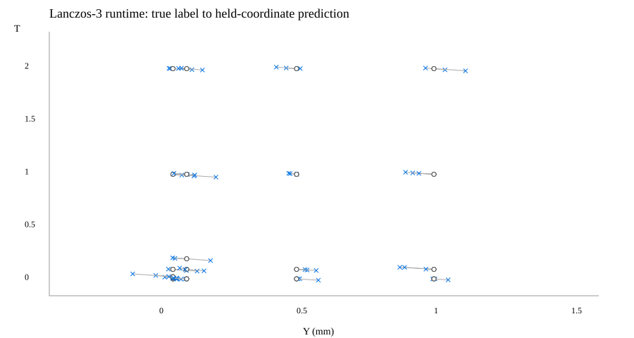

원본57장 재실행: 비교 실험 대비 특징 최대차이 0, 좌표 보류 예측 최대차이 0. 일반 실행과평가 모델을 분리했다.
| 축 | 평균 절대오차 | 최대 절대오차 | RMSE |
|---|---|---|---|
| Y(mm) | 0.0447327 | 0.156571 | 0.0580223 |
| T(yaw라벨) | 0.00800017 | 0.0270603 | 0.0105135 |
동시 ±1틱 34/57, 두 축0.09 이내 51/57. 이미 개발에노출된 기존 혼합57장, 같은좌표3회 반복을묶은19좌표 보류 성적이다. 새촬영·실제이동·원점반복수렴·다른장비 일반화는 검증하지 않았다.

회색 원은 정답, 파란 십자는 좌표 보류 예측이다. 같은이미지끼리 선으로 연결했다.
실제alignment()는 전체57장으로학습한 Lanczos 모델을 사용하며 정답·파일명·fold를 받지 않는다. 이 보고서의보류 성적은 실제실행에서 추출한특징에 별도평가용19개 모델을 적용한것이다. predictions.csv의 deploy_Y/deploy_T는 전체학습모델 출력이므로 재대입 확인용이며위 성적과구분한다.
57장 원본SHA-256 대조,입력픽셀 불변,모든출력의 유한값,승인된10특징과예측대응을 검사했다. CTest는Lanczos 상수/정수표본/미분,잘못된자산·빈영상·크기·타입·채널·무특징영상의오류처리를 검사한다.
기준자산 초기화 618.906ms,사진별 추론중앙값 786.589ms. 사진별시간은디코딩·해시·초기화를제외하며 각1회 측정이다.